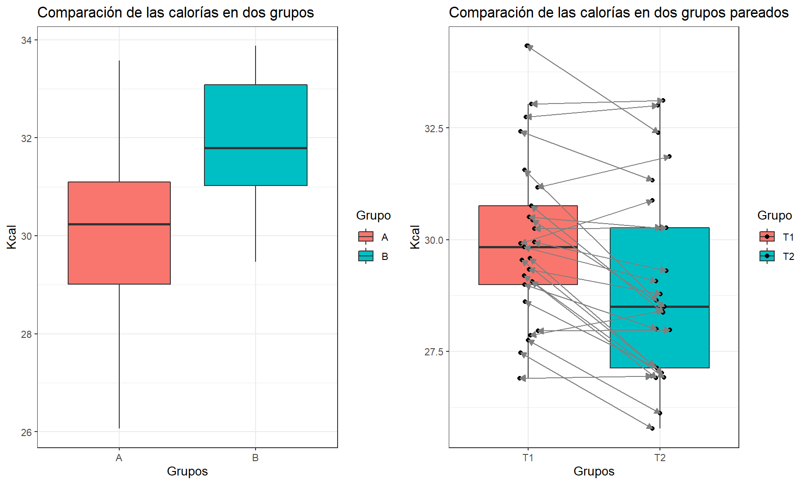

Hasta ahora se ha realizado estimaciones y verificaciones de hipótesis para un parámetro. Ahora, el interés es comparar dos grupos, es decir, comparar una característica común pero que se diferencian en dos estados distintos y que no existen otras condiciones adicionales que diferencien las dos muestras.
Para estos casos se presentan dos situaciones, que las muestras sean independientes o que las muestras sean pareadas, es decir, que es el seguimiento de un solo individuo en el cambio de estado (tiempo, área, condición).

Dada estas situaciones entonces surge la pregunta ¿Existe diferencia significativa entre los dos grupos? Para responder esta peregunta tenemos dos procedimientos para llegar a la respuesta:
Como vimos en la primera parte existe una relación directa entre los dos procedimientos cuando se habla de inferencia sobre un parámetro, para el caso de la comparación de grupos también existe esta relación entre IC y PH, sin embargo, el procedimiento involucra unos pasos adicionales en el caso de la diferencia de promedios.
La prueba que se utiliza con mas frecuencia con relación a la diferencia entre las proporciones de dos poblaciones es aquella en la que su diferencia es cero. Sin embargo, es posible probar que dicha diferencia es igual a algún otro valor. Es posible efectuar pruebas tanto unilaterales como bilaterales.
Cuando la hipótesis nula que va a probarse es \(P_1 -P_2= 0\), se supone que las proporciones de las dos poblaciones son iguales. Esto se utiliza como justificación para combinar los resultados de las dos muestras y obtener una estimación ponderada de la proporción común supuesta. Las hipótesis están dadas por:
\[\begin{align*} H_0: \pi_1-\pi_2 = \delta \quad \text{vs} \quad H_a: \begin{cases} \pi_1-\pi_2 &< \delta \\ \pi_1-\pi_2 &> \delta \\ \pi_1-\pi_2 &\neq \delta \\ \end{cases} \end{align*}\]
El estadístico de prueba está dado por:
\[Z_c=\frac{(\hat p_1 - \hat p_2)-\delta}{\sqrt{\frac{\bar p(1-\bar p)}{n_1}+\frac{\bar p(1-\bar p)}{n_2}}} \sim N(0,1)\]
donde \(\bar p\) es la proporción muestral agrupada:
\[\bar p = \cfrac{x_1 + x_2}{n_1+n_2}\]
Para un \(\alpha\) dado, la Región Crítica es de la forma:
\[\begin{align*} R.C: \begin{cases} Z_c &\rightarrow\, Z_c <z_\alpha \\ Z_c &\rightarrow\, Z_c >z_{1-\alpha} \\ Z_c &\rightarrow\, |Z_c| >z_{1-\alpha/2} \\ \end{cases} \qquad V_p: \begin{cases} P(Z < Z_c) \\ P(Z > Z_c) \\ P(|Z| > |Z_c|) \\ \end{cases} \end{align*}\]
En un estudio de cuidados nutricionales en asilos para ancianos, Lan y Justice (1991) encontraron que entre 55 pacientes con hipertensión, 24 tenian una dieta con restricción de sodio. De 149 pacientes sin hipertensión, 36 tenían una dieta sin sodio. ¿Es posible concluir que, en las poblaciones muestreadas, la proporción de pacientes con dieta restringida en sodio es mayor entre pacientes con hipertensión que entre pacientes sin hipertension?
Tenemos las siguientes hipótesis: \[H_0: \pi_H-\pi_{\bar H}=0 \quad\text{vs}\quad H_a: \pi_H-\pi_{\bar H}>0\] Del enunciado podemos calcular la proporción muestral agrupada: \[\bar p=\frac{24+36}{55+149}=\frac{60}{204}=0.2941176\] Entonces con el estadístico de prueba se puede estimar la región crítica: \[Z_c=\frac{24/55-36/149}{\sqrt{\left(\frac{60}{204}\right)\left(\frac{144}{204}\right)\left(\frac{1}{55}+\frac{1}{149}\right)}}=2.709048\] Si \(\alpha =0.05\) entonces se tiene que \(Z_{0.95}=1.645\) y así la región de rechazo es de la forma: \[RC=\{Z_c\,|\,Z_c>Z_{0.95}\}=\{Z_c\,|\,2.709048>1.645\}\] Y en términos del valor-p se calcula: \[P(Z>Z_c)=P(Z>0.542326)=1-P(Z<2.709048)=0.003373829\] Como \(ZC > 1.645\) o \(0.00337 < 0.05\), entonces existe suficiente evidencia muestral que la proporción con dieta restringida en sodio es mayor entre los pacientes hipertensos que entre los pacientes sin hipertensión, por lo tanto se rechaza \(H_0\).
Otro paso importante es verificar si las varianzas de ambos grupos son iguales o no, esto es importante porque la intención de la comparación de grupos a partir de la diferencia de promedios solamente debe comparar un factor o grupo que diferencia las muestras. La presencia de variabilidad excesiva en una de las muestras indicaría que existe otra condición no analizada que puede afectar la comparación, sin embargo, es posible controlar este problema estimando una variación conjunta entre los dos grupos.
\[\begin{align*} H_0: \frac{\sigma_A^2}{\sigma_A^2}=1 \quad \text{vs} \quad H_a: \begin{cases} \sigma_A^2/\sigma_A^2 &<1 \\ \sigma_A^2/\sigma_A^2 &>1 \\ \sigma_A^2/\sigma_A^2 &\neq 1 \\ \end{cases} \end{align*}\]
El estadístico de prueba está dado por:
\[F_c=\frac{S_A^2}{S_B^2} \sim F_{(n_A-1,n_B-1)}\]
Para un \(\alpha\) dado, la Región Crítica es de la forma:
\[\begin{align*} R.C: \begin{cases} F_c &\rightarrow\, F_c <\frac{1}{F_{1-\alpha,\,(n_B-1,n_A-1)}} \\ F_c &\rightarrow\, F_c >F_{1-\alpha,\,(n_A-1,n_B-1)} \\ F_c &\rightarrow\, F_c < F_{1-\alpha/2,\,(n_A-1,n_B-1)} \\ \end{cases} \qquad V_p: \begin{cases} P(F_{(n_B-1,n_A-1)} < F_c) \\ P(F_{(n_A-1,n_B-1)} > F_c) \\ P(F_{(n_A-1,n_B-1)} < F_c) \\ \end{cases} \end{align*}\]
Nota
Estos pasos de verificación son necesarios para seleccionar el método estadístico adecuado para realizar la comparación de grupos, ya sea por Intervalos de Confianza o por Purebas de Hipótesis.
El objetivo de la comparación es resolver una de las siguientes hipótesis antagónicas:
\[\begin{align*} H_0: \mu_A-\mu_B = \delta \quad \text{vs} \quad H_a: \begin{cases} \mu_A-\mu_B &< \delta \\ \mu_A-\mu_B &> \delta \\ \mu_A-\mu_B &\neq \delta \\ \end{cases} \end{align*}\]
Entonces el estadístico de prueba está condicionado al comportamiento de las muestras aleatorias de cada grupo, entonces es necesario verificar si los datos son normales o no y si las varianzas son iguales o no, cada paso o decisión condiciona a seleccionar el mejor estadístico de prueba. Entonces, para seleccionar la mejor opción para compar grupos basados en la promedio tenemos los siguientes árboles de decisión para IC o para PH.